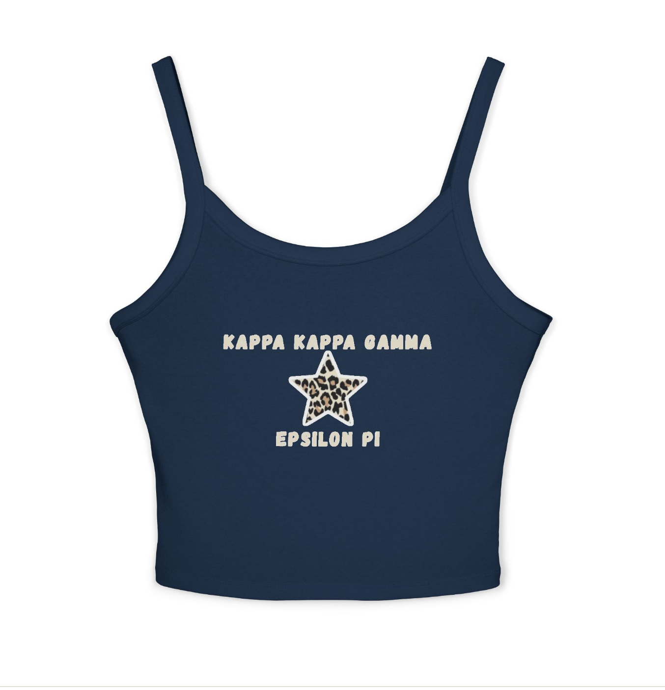
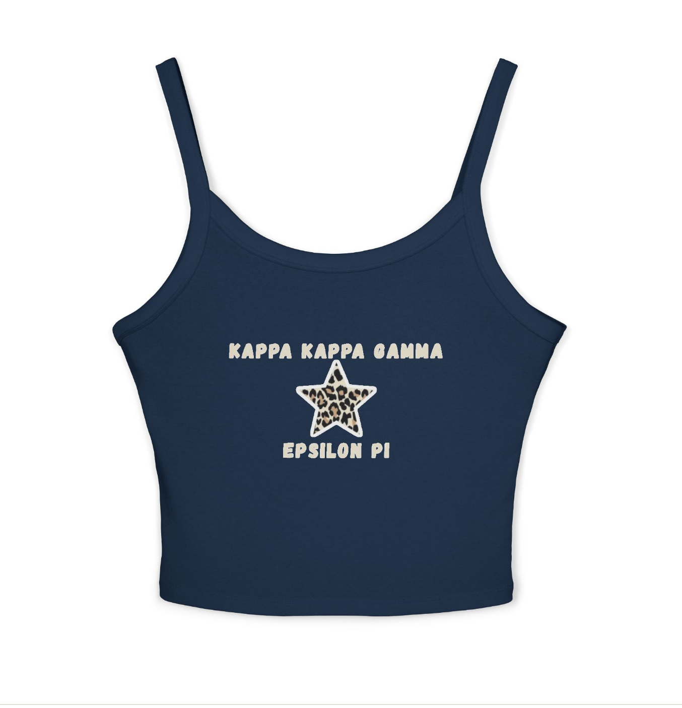

Advika Vipul
Hi! My name is Advika Vipul and I am curently a first-year at the University of California, Riverside majoring in Business Administration with a concentration in marketing and management. I am originally from Oak Park, California, which is located in Ventura County about two hours away from UCR! Aside from school, I love to design clothes, spend time with friends, and go swimming. I am a very outgoing person and would love to make connections! I hope to develop my professional resume by partaking in different marketing and management positions. Feel free to reach out to me regarding any job opportunities if my resume aligns with your position!
I am a Business Administration at UCR hoping to specialize in management and fashion merchandise marketing. I am very passionate about the intersection between sustainability and fashion, and hope to parallel them in my professional career. I want to work as a member of management for a large-scale fashion company, and or start my own company in order to push for further sustainability and equity within the field. I hope to achieve this by expanding on the professional experiences I hold. Currently, I have a wide array of experiences that have allowed me to develop as a person, but I am eager to grow and learn more through any opportunity that is presented to me. I truly enjoy all aspects of the business world - from teamwork and collaboration to fast paced and high-stakes thinking.
Currently, I have a strong set of experiences that have shaped me into the determined and passionate person I am today. During my time in high school, I served on the executive board of Girl Up as their Social Media Manager, which allowed me to understand the importance of digital marketing for an organization. I was able to manage all social media accounts, such as the Facebook and Instagram making weekly posts that increased our overall membership by 25%. I also assisted in general activities such as hosting meetings, helping create fundraisers, and collaborate with other womens' health clubs to promote advocacy. Furthermore, I served as as a Wayfinder for UCLA Health which allowed me to develop customer service skills and develop empathy for the families and patients which I assisted. My job allowed me to work in a very high-paced and busy atmosphere with a diverse patient population. I was able to parallel many skills such as organization, understanding, and leadership which will make a lasting impact on me as a transition to a role in the business world. Lastly, I currently serve as the Director of Finance for the Kapppa Kappa Gamma sorority Epsilon Pi Chapter where I manage almost $100,000 in funds and direct their spending. I also assist in the weekly Kappa newsletter, and recently designed merch which was printed and passed out as the merch this semester. The merchandise is shown below in my portfolio. I completed all of the designs myself! Back to director of finance, this role most directly coincides with my professional interests as I am able to not only manage the funds, increase membership, and promote events - but I am able to parallel my passion for sustainability through this. As a philanthropic organization, I am able to collaborate with other Kappa Kappa Gamma members in service and outreach events which allows us to serve our community, while showcasing our dedication to the community which increases our overall membership. All of these roles have helped me develop into the passionate and determined worker I currently am, and the businesswoman I hope to become.
Experience
Director of Finance
• Resolved financial disputes within departments in the sorority
• Designed the budget for the upcoming school year
• Improved tracking of expenses to guarantee accountability and transparency in finances
• Developed vendor agreements to maximize resource utilization and cost reduction
Wayfinder
• Assisted with special events and programs
• Maintained a clean, safe, and well-organized patient environment
• Ensured the safe transfer of patients using proper techniques to prevent injuries and falls
• Supported engaging, fun, and smooth-running events by helping with organization and planning
• Used strong interpersonal communication skills to convey information to others
Social Media Manager
• Led efforts to support a high school club under the global Girl Up organization, creating an atmosphere that encouraged female advocacy and empowerment
• Managed the social media and public relations operations to raise the club's profile and encourage participation
• Worked together with club members to plan events, workshops, and activities that promoted women's empowerment
Education
University of California Riverside
Portfolio




